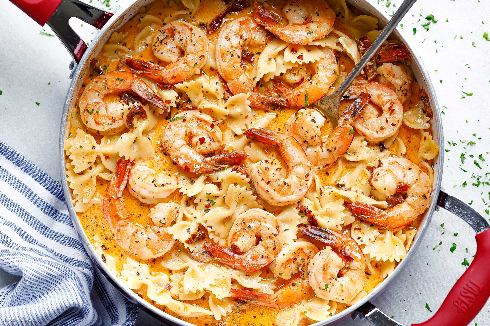

Shrimp Pasta

Lemon Garlic Shrimp Pasta
This lemon garlic shrimp pasta is a great way to enjoy some pasta.
I decided to add some lemon for a twist to brighten it up some you will not regret it.
Ingredients
- 8 ounces Linguine Pasta
- 2 Tablespoons olive oil
- 6 Tablespoons butter
- 4 cloves garlic minced
- 1 teaspoon red pepper flakes
- 1 1/4 pound large shrimp
- salt and pepper to taste
- 1 teaspoon italian seasoning
- 4 cups baby spinach
- 2 Tablespoons parsley chopped
- 1 Tablespoons lemon juice
Instructions
- In a large pot cook the pasta in boiling water according to package directions. Drain and set aside.
- Using the same pan, heat olive oil and 2 Tablespoons of butter. Add the garlic and red pepper flakes and cook until fragrant.
- Add the shrimp and salt and pepper to taste. Cook until the shrimp start to turn pink. Add italian seasoning and spinach and cook until wilted.
- Add the pasta back to the pot with the remaining butter, parmesan, and parsley. Still until mixed and butter is melted.
- Add the lemon juice before serving and serve while hot.